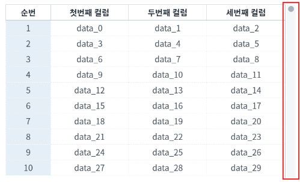
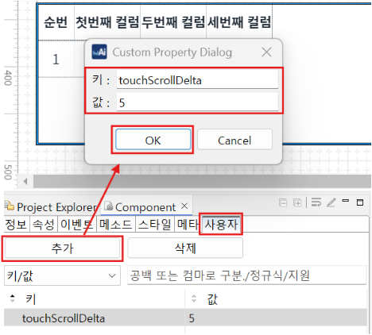

모바일에서 GridView의 세로 스크롤 속도가 빠르거나 느릴 경우 'touchScrollDelta' 속성으로 제어할 수 있습니다. ※ PC보다 모바일에서 확인 시, 속도 차이를 더 명확하게 확인할 수 있습니다.
GridView 세로 스크롤 속도 조절하기
예제 영역 touchScrollDelta="1"과 touchScrollDelta="5"에 구성된 GridView에서 테스트합니다.
1
STEP 1: GrideView 스크롤을 내려 속도를 비교합니다.
Image 1.브라우저(Chrome) 실행 예시

2
STEP 2: 실행 결과를 확인합니다.
touchScrollDelta="1"은 속도가 느리고, touchScrollDelta="5"는 속도가 빠릅니다.
1
GridView의 속성을 정의합니다.
[필수] touchScrollDelta="설정 값"
(옵션 설명)
- '1 ~ 5'까지의 값을 설정합니다.
- '1'이 가장 느린 속도이며, '5'가 가장 빠른 속도입니다.
- 비공개 속성이므로, 사용자 탭에서 추가합니다.
Image 2.웹스퀘어 스튜디오의 Component View - 속성 설정 예시

touchScrollDelta